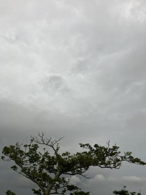
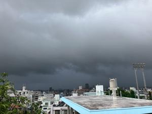
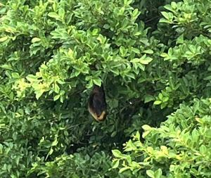

うるがいの話 ある日
最新: 近所の駐車状況【うるがいの話 ある日】とは 一日だけのプログです
『うるがいの話』の最新一日だけのプログで、通信料が少なく経済的だ。カニの画像をクリックすると全ての日付が載る『うるがいの話』サイトを表示します
|
|
【うるがいの話】 うるがい(ｳﾙｶﾞｲ urugai)とは、『もずくがに』の名前でとても大きくなります。 |
|---|---|
|
|
【カミマヤーの話】 猫のことを方言でマヤーといいます。カミマヤー（kamimayaa）とは、神の猫のことです。 |
|
【たながぁの音楽】 たながぁ（ﾀﾅｶﾞｰ tanagaa）とは手長えびのことで、何種類かあり大きいのは車 エビぐらいになります。 |

|
【ぶながぁの話】 ぶながぁ(ﾌﾞﾅｶﾞｰ bunagaa)とは、赤い髪の毛、赤い身体、そして身長は１ｍ２０ｃｍ ぐらい、川の蟹を食べているの目撃された。場所は沖縄県国頭郡大宜味村のと ある村僕の隣近所に住んでいる爺さんから、聞いた話です。 |
|
|
【ギーマの話】 ギーマ(giima)とは、山原の里山に咲くスズランに似た、 花を付けます。実は食べられます、 気が付くと口の周りが紫になっています。 |
2023年09月30日 (土）近所の駐車状況
16:15
 
車椅子で介護が必要になったアラばぁさんの所の子供たちの軽自動車３台が違
法駐車をしている。そこに、工事している隣の軽自動車が、割り込んできた。
道が狭くこの前、これまた介護サービスを受けている高齢なるミヤさんが、呼
んだと思われる救急車が、ミヤさん宅に停める。道が塞がれてしまった、マン
ションへ出かけようとしていたが、・・・・。コドモに、日曜日は工事してい
ないだろうから、家に来るなら日曜日にしてね！と言ったものの、ここ数日の
雨の天気や、台風の発生を考えると日曜日も工事はするのだろう。で、土曜日
の今日、コドモが、車で来た。家の駐車場に止めることにする、雨なので車に
カバーはしなかったが、天気が良かったら買ってからカバーをかけるのが面倒
くさくトランクに収納しているカバーを、利用するつもりである。工事は、小
雨が降るなか１５時半前に引き上げていった。お昼、ベランダにでて雨雲を見
ていたら、近くにあるガジュマルの木にオオコウモリが、とまっていた。

１６時０６分 ビットコインの総資産 ￥１１、６６２（↓２０）